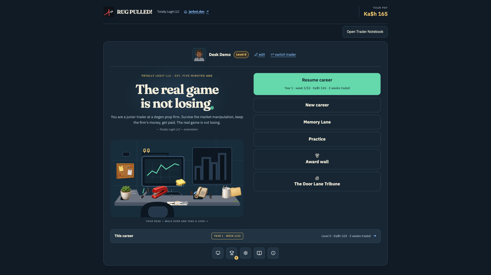
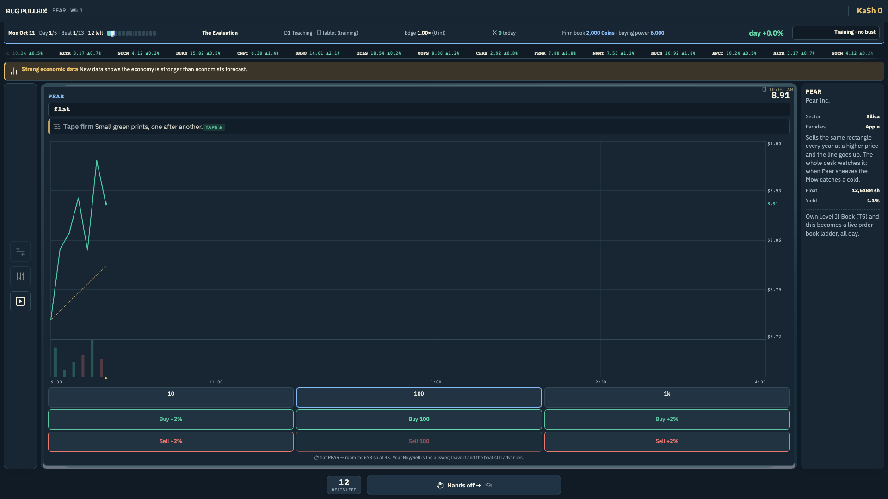
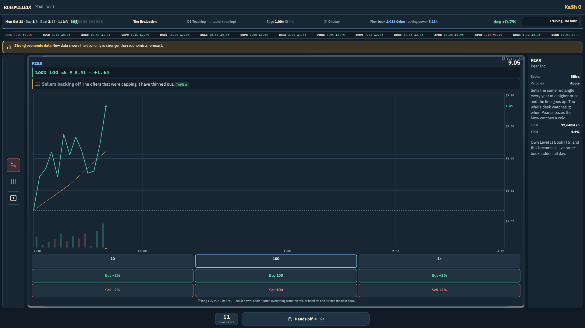
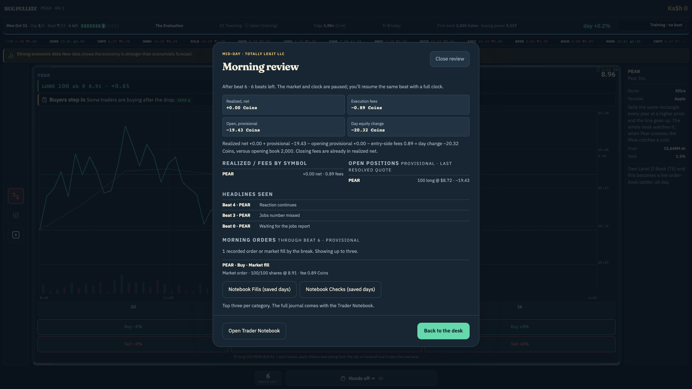
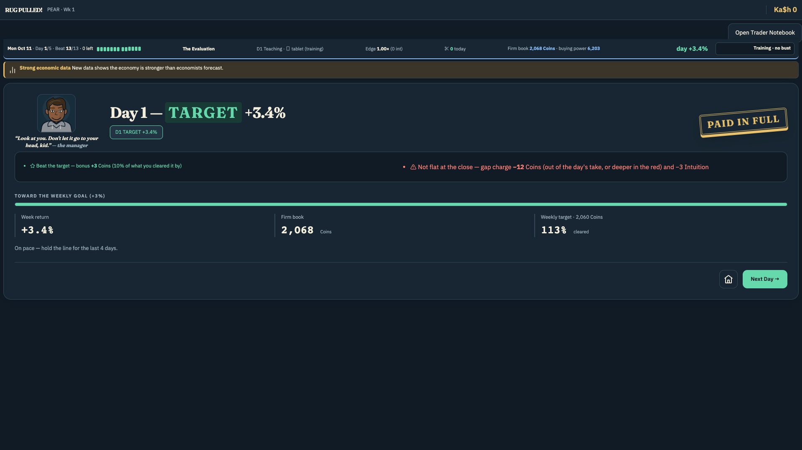
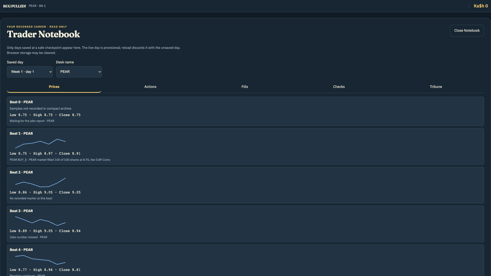
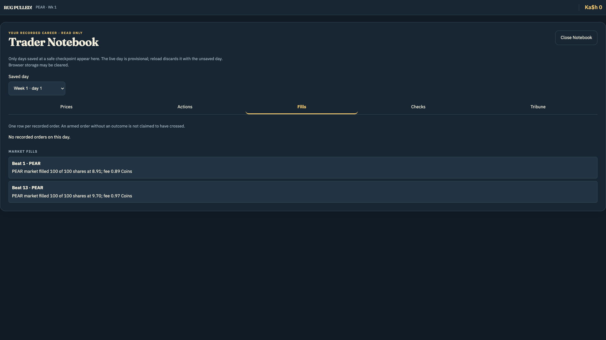

Coming to Steam · Windows and macOS
Rug Pulled!
Test your skills without testing your wallet.
It's not what you make. It's what you keep.
Play free (closed beta) →Wishlist on Steam
Screenshots














You look broke. Perfect.
Sit down. Don't touch anything yet. That's your desk, those are your monitors, and the number on the middle one is my money. Not yours. Mine. I front the capital, you trade it, I take a cut. You keep what's left. That's the whole arrangement and it's better than you'll get anywhere else on this street.
Here's what the job is. Fifty-two weeks. Real calendar — earnings season, Fed days, triple witching, the dead zone in August where nothing happens until it does. You'll trade the Mow, MacroHard, GreenBag, whatever garbage is moving. Bar by bar. You decide how fast it comes at you, and I'd start slow if I were you.
Everybody who walks in here tells me the same thing: it's luck. It ain't. The tape is already written before you sit down — every pump, every fakeout, every support level that holds right up until it doesn't. Nobody's hiding it from you. It's all on the screen. Your job is to learn to read it before it reads you.
Look around while you're at it. That wall — those aren't decorations, those are the ones who made it. You want your name up there, you earn the desk first. Until then, hang what you like on it. Nobody's stopping you.
And read the Tribune. Every week, front page, Door Lane's finest. Who finished green, who got taken apart, who's reporting earnings. The ones who skip it get surprised. I don't pay anybody to be surprised.
Now the part you'll ignore and then remember.
I have a line. Drawdown. You cross it, I reset your week and you're on probation, and I'll be honest with you, kid, most of you don't come back from probation. Cross it twice and I won't know your name. That's not a threat, that's payroll. You don't get a third conversation with me.
The ones who last aren't the ones who catch the big move. I've watched a hundred of them catch the big move and hand it all back Thursday. The ones who last are boring. They size small, they take the loss early, and they're still sitting there in year four while the geniuses are selling cars in Jersey.
It's not what you make. It's what you keep.
—
The fine print
(The part the old man doesn't spell out. Read it anyway.)
- A full 52-week trading year, played bar by bar, at a speed you choose.
- A market that's scripted, not random. Every session is built from a seed before your first trade. Skill is reading it — not guessing, and not grinding for luck.
- Careers that end. Blow the drawdown limit once and you're on probation; twice and that career is over for good. You start again as nobody.
- Seven difficulty tiers you earn, not pick. The firm decides when you're ready.
- Parody tickers with their own personalities, earnings, and ways of ruining your week.
- Resting orders, brackets, and a Level II book — tools you unlock by surviving, none of which move your win rate. There is nothing to buy that makes you better at this.
- A desk you furnish and a floor you live on — and a daily paper whose headlines actually move the tape.
- Your whole roster, exportable to a single file. Your careers are yours.
- An original soundtrack that shifts with the year you're in. Off until you turn it on.
- A first-week guide that shows you the desk, the line, and how to end the day. Skip it any time.
- Survive long enough and the job changes. You stop being the one who gets rug pulled.
Launching first on Steam for Windows and macOS. Until then, the closed beta plays free in your browser — sign in with an email link, no password, no card.
Now get to work.
What's changed
Everything below is in the build you can play right now.
Added
- Original soundtrack. — twenty tracks mapped to years and screens.
- First-week guide. — an optional walkthrough of The Evaluation.
- In-game Help. — the player manual, inside the game.
- Closed beta access. Sign in with an email link — no password. The gate is removable without a rewrite, and the game runs with it switched off.
- Roster backup and restore. Export every career to a single file and bring it back. Also the transfer format for Rug Pulled!: Live.
- Player-configurable trade trigger. The buy/sell step defaults to ±2% and is adjustable from 1% to 10% in settings. Previously fixed at ±5%.
- Probation. A bust no longer ends a career outright — eight green weeks clears it.
- Three-monitor carousel on the desk.
- Award wall on the main menu. The full list of awards and what earns them, one tap from the title screen instead of three screens down.
Changed
- Chart gets real vertical space. Order controls moved to the side; the chart no longer collapses toward its minimum height on short screens.
- Award wall moved clear of the title monitor.
Fixed
- Setup and appearance screens no longer collapse to zero height at short viewports.
- Office catalog art now loads from builds opened as a local file, not only from the web build.
Found a bug? Want something added?
If you play, use the feedback panel inside the game. You're already signed in, and your career attaches automatically — a bug report with the career state attached can actually be reproduced.
Otherwise, email hello@jerbot.dev.